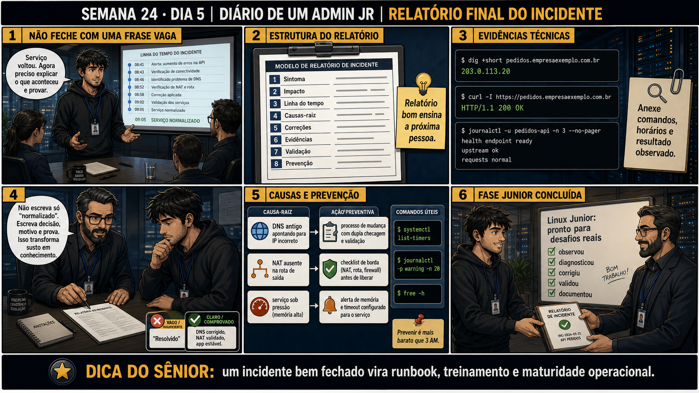

Relatório Final e Fim da Fase Júnior
um relatório que só descreve o passado é incompleto — o valor real está em prevenir o próximo incidente
ANTES DE ALTERAR, OBSERVE. DEPOIS DE ALTERAR, VALIDE.
1. Fechando o Chamado #2400
💡 Passa o mouse nas palavras destacadas pra ver uma dica rápida — clica se quiser a explicação completa com analogia.
2. Antes de ver as opções — tenta responder
3. Questão comentada — clica numa alternativa
4. Decodificador de conceitos
Clica em qualquer termo pra ver a definição completa e uma analogia do dia a dia:
5. O relatório final do Chamado #2400
| Seção | Conteúdo |
|---|---|
| Linha do tempo | Dia 1: escopo. Dia 2: 3 causas mapeadas. Dia 3: correções aplicadas. Dia 4: validação ponta a ponta. |
| Causas raiz | Trunk sem VLAN 30, NAT desatualizado, AllowedIPs (servidor e cliente) desatualizado. |
| Prevenção | Checklist de migração de VLAN cobrindo trunk, NAT e VPN juntos. |
=== RELATÓRIO FINAL — CHAMADO #2400 === Título: Acesso externo a api.empresa.com fora do ar após migração de VLAN LINHA DO TEMPO Dia 1: Escopo definido (falha só externa). DNS confirmado OK. Dia 2: Três causas raiz mapeadas, independentes entre si. Dia 3: Correções aplicadas em ordem de dependência, validadas isoladamente. Dia 4: Validação ponta a ponta revelou uma quarta lacuna (AllowedIPs do cliente). CAUSAS RAIZ (todas decorrentes da migração de VLAN incompleta) 1. Trunk entre switch e firewall sem a VLAN 30 liberada. 2. Regra de NAT ainda apontando pro IP antigo do servidor (10.20.10.50). 3. AllowedIPs do servidor (WireGuard) restrito à subnet antiga. 4. AllowedIPs do CLIENTE do parceiro, também restrito à subnet antiga. AÇÕES TOMADAS 1. Trunk liberado pra VLAN 30 — validado com ping interno. 2. NAT atualizado pro IP novo — validado com nc externo direto. 3. AllowedIPs do servidor atualizado — parte da validação ponta a ponta. 4. AllowedIPs do cliente do parceiro atualizado — validação final ponta a ponta bem-sucedida. RECOMENDAÇÃO DE PREVENÇÃO Criar checklist obrigatório de migração de VLAN cobrindo: trunk, NAT, regras de firewall, e configuração de VPN (dos dois lados) — a ser seguido em toda migração futura de infraestrutura. STATUS: RESOLVIDO E VALIDADO PONTA A PONTA — 2026-09-01
5.1 O painel 4 da prancha de hoje mostra a gerência perguntando "isso vai acontecer nas próximas migrações também?" — e o júnior sem resposta pronta, porque o relatório não tinha seção de prevenção
Sem a recomendação de prevenção documentada, a pergunta pega o júnior de surpresa.
5.2 "Escrever sobre prevenção não é meio que admitir que a migração foi malfeita, e alguém vai levar a culpa?"
Um colega evita escrever recomendações de prevenção com medo de que isso pareça apontar culpados.
6. Procedimento profissional
- Escreva a linha do tempo completa do incidente, do início ao fechamento.
- Liste TODAS as causas raiz encontradas, não só a primeira ou a mais óbvia.
- Documente as ações tomadas em ordem, com a validação específica de cada uma.
- Inclua uma recomendação de prevenção focada em processo, não em pessoas.
- Feche o relatório com status claro: resolvido e validado ponta a ponta, com data.
7. Laboratório guiado — marca conforme for testando
- Reúna os logs de investigação dos quatro dias anteriores (Dias 1-4) desta missão.Resultado esperado: registro completo das quatro etapas disponível pra consulta.
- Escreva o relatório final completo, seguindo a estrutura da seção 5 desta aula.Resultado esperado: relatório com linha do tempo, causas, ações e prevenção.🧑🏫 Aqui entra o Mentor (em breve): se quiser feedback sobre a clareza do seu relatório antes de considerá-lo pronto, este é o ponto onde o chat com o Sênior-IA vai revisar com você.
- Escreva especificamente a recomendação de prevenção, focada em processo (o checklist de migração).Resultado esperado: recomendação concreta e acionável, não vaga.
8. Validação e encerramento
- Um relatório completo cobre linha do tempo, todas as causas, ações e prevenção.
- Recomendações de prevenção focam em processo, não em pessoas.
- Ter a prevenção já documentada evita respostas vagas quando alguém perguntar "isso vai acontecer de novo?".
- O relatório só é fechado depois da validação ponta a ponta confirmada (Dia 4).
Rollback e limites
9. Resposta final
🏁 Semana 24 concluída — Missão Final Júnior encerrada
Cinco dias, um incidente, quatro causas raiz, uma validação ponta a ponta que revelou o que a validação por camada não pegou, e um relatório final que fecha o ciclo com prevenção, não só correção. Você atravessou sozinho um incidente do tamanho que um sistemista júnior real encontra em produção — sem atalhos, sem pular etapas, documentando cada passo.
🎓 FASE JÚNIOR COMPLETA — 24 semanas, do primeiro acesso SSH até uma migração de infraestrutura real
Você começou na Semana 1 aprendendo a observar antes de tocar num servidor pela primeira vez. Passou por processos, texto, automação em bash, storage, boot e recuperação — fechando a Fase 1 (Linux Júnior). Depois construiu, camada por camada, o modelo TCP/IP, DNS, firewall, NAT, VPN, VLAN, tcpdump, NFS e Samba — fechando a Fase 2 (Redes Júnior). E hoje você fechou os dois com um incidente real, integrando tudo isso de uma vez, do jeito que a produção realmente cobra.
A Fase Pleno começa em breve, aprofundando cada uma dessas áreas com o nível de complexidade que separa quem sabe operar de quem sabe projetar. Parabéns por chegar até aqui — a Fase Júnior está oficialmente completa.